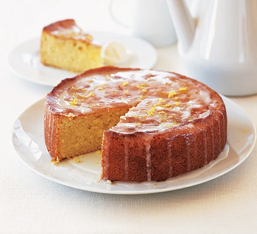
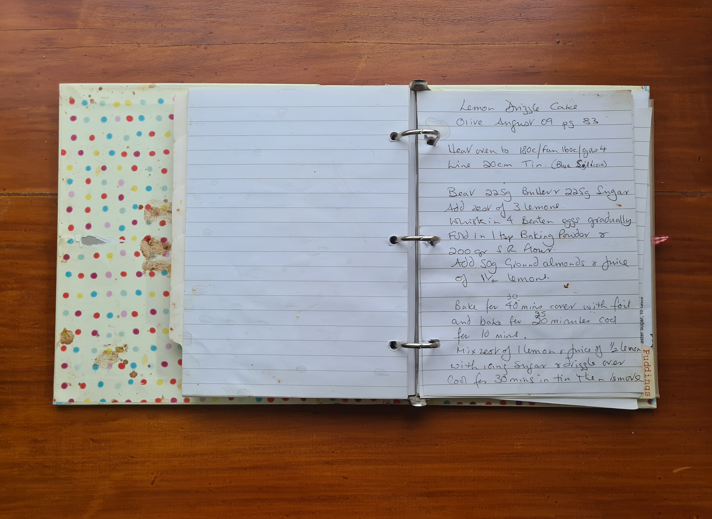

Home
Lemon Drizzle Cake

Description
Lemon drizzle cake is one of the nicest cakes to make, a soft sponge with a sharp touch of lemon.

Ingredients
Cake
200g Self Raising Flour
225g Butter
225g Caster Sugar
Zest of 3 Lemons
4 Eggs
1 tsp Baking Powder
50g Ground Almonds
Juice 1 1/2 Lemons
Lemon Icing
Zest of 1 Lemon
Juice 1/2 Lemon
Icing Sugar
Steps
Preheat fan oven to 320°F/160°C.
Lightly grease and line a 20cm cake tin.
Beat the butter, caster sugar and lemon zest together in a large bowl until its a pale cream.
Whisk in the eggs one at a time.
Fold in the baking powder,ground almonds and self raising flour.
Whisk in the lemon juice .
Pour mix into the lined cake tin and cover with foil
Place in the oven and bake for 30 minutes.
Remove the foil and bake for a further 25 mins
Remove from the oven place on a wire rack and allow the cake to cool in the tin for 10 minutes
While the cake is cooling, mix the lemon juice, zest and just enough icing sugar to make runny icing
Pour the runny icing over the cake and allow to cool for a further 30 mins in the tin
Remove from the tin place on the wire rack and allow to completely cool before serving